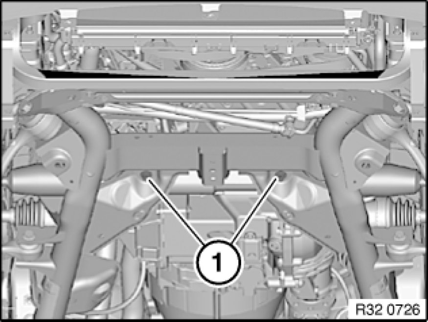

Removing and Installing/Replacing Power Steering Gear
32 13 060 - Removing and installing/replacing power steering gear

Important!
Adhere to the utmost cleanliness. Do not allow any dirt to enter the hydraulic system.
Seal off pipe connections with plugs.

Necessary preliminary tasks:
- Draw off and dispose off hydraulic fluid from fluid reservoir
- If necessary, remove assembly underside protection Removing and Installing/Replacing Front Underbody Protection
- Remove reinforcement plate Service and Repair
- If necessary, remove steering gear cover on both sides
- Remove double joint from power steering gear Removing And Installing/Replacing Double Joint With Flexible Disk
- Remove tie rod end from swivel bearing Replacing Left or Right Tie Rod
- Replacement only:
- Remove tie rod end at both ends of tie rod Replacing Left or Right Tie Rod
- Remove stabilizer link on both sides from stabilizer Removing and Installing/Replacing Push Rod (Stabilizer Link) for Left/Right Stabilizer

If necessary, remove heat shield from power steering gear.
Release FCD couplings Notes on Removing/Installing FCD Clutches, disconnect hydraulic lines and lay to one side.
Disconnect plug connection on EH converter

Release screws (1).
Turn left swivel bearing to left.
If necessary, detach pressure line from front axle carrier.
Turn power steering gear and remove through left wheel arch.
Installation Note:
Replace screws and self-locking nuts.
Tightening torque 32 00 1AZ Steering.
After installation:
- Fill and bleed hydraulic system Service and Repair
- Check pipe connections for leaks
- Perform chassis alignment check
- Carry out steering angle sensor adjustment Adjustments